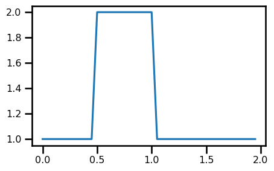
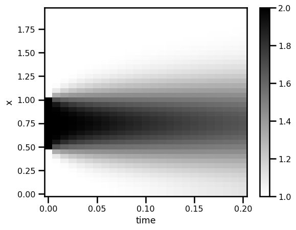
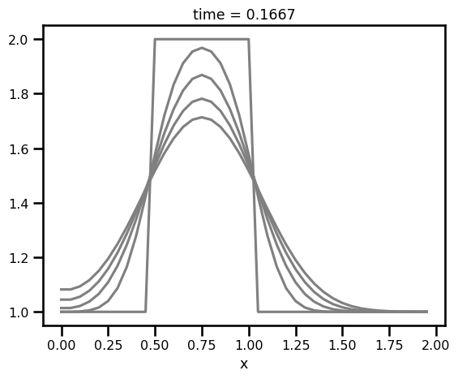

1D Diffusion#
Jax-ify
Don’t Reinvent the Wheel
import autoroot
import jax
import jax.numpy as jnp
import numpy as np
import equinox as eqx
import kernex as kex
import finitediffx as fdx
import diffrax as dfx
import xarray as xr
import matplotlib.pyplot as plt
import seaborn as sns
from tqdm.notebook import tqdm, trange
from jaxtyping import Float, Array, PyTree, ArrayLike
import wandb
from jaxsw._src.domain.base import Domain
from jaxsw._src.models.pde import DynamicalSystem
from jaxsw._src.domain.time import TimeDomain
sns.reset_defaults()
sns.set_context(context="talk", font_scale=0.7)
jax.config.update("jax_enable_x64", True)
%matplotlib inline
%load_ext autoreload
%autoreload 2
Let’s start with a simple 1D Diffusion scheme. This PDE is defined as:
(25)#\[
\begin{aligned}
\frac{\partial u}{\partial t} &= \nu\frac{\partial^2 u}{\partial x^2}
\end{aligned}
\]
Here, we are advised to a 2nd order accurate central difference scheme in space and 1st order temporal scheme (Euler).
Domain#
nx = 41
xmin = 0.0
xmax = 2.0
domain = Domain.from_numpoints(xmin=(xmin,), xmax=(xmax,), N=(nx,))
print(f"Size: {domain.size}")
print(f"nDims: {domain.ndim}")
print(f"Grid Size: {domain.grid.shape}")
print(f"Cell Volume: {domain.cell_volume}")
Size: (40,)
nDims: 1
Grid Size: (40, 1)
Cell Volume: 0.05
Initial Conditions#
\[\begin{split}
\begin{aligned}
\mathcal{IC}[u] &=
\begin{cases}
2 && \text{for }x \in (0.5, 1) \\
1 && \text{everywhere else}
\end{cases}
\end{aligned}
\end{split}\]
def init_u0(domain):
"""Initial condition from grid"""
u = jnp.ones_like(domain.grid, dtype=jnp.float64)
u = u.at[int(0.5 / domain.dx[0]) : int(1 / domain.dx[0] + 1)].set(2.0)
return u
u_init = init_u0(domain)
fig, ax = plt.subplots(figsize=(5, 3))
ax.plot(domain.grid.squeeze(), u_init)
plt.show()

Equation of Motion#
Because we are doing diffusion, we will use 2nd order central difference method for the terms.
(25)#\[
\begin{aligned}
D_x[u] &:= \frac{\partial^2 u}{\partial x^2}
\end{aligned}
\]
where \(D\) is the central finite difference method.
from jaxsw._src.models.pde import DynamicalSystem
from jaxsw._src.domain.time import TimeDomain
from jaxsw._src.operators.functional import diffusion
from typing import Optional
class Diffusion1D(DynamicalSystem):
@staticmethod
def equation_of_motion(t: float, u: Array, args):
nu, domain = args
# FD - u vector
rhs = diffusion.diffusion_1D(u=u, diffusivity=nu, step_size=domain.dx[0])
return rhs
# SPATIAL DISCRETIZATION
u_init = init_u0(domain)
nu = 0.3
out = Diffusion1D.equation_of_motion(0, u_init, (nu, domain))
out.min(), out.max()
(Array(-120., dtype=float64), Array(120., dtype=float64))
fig, ax = plt.subplots(figsize=(5, 3))
ax.plot(domain.grid.squeeze(), u_init)
ax.plot(domain.grid.squeeze(), out)
plt.show()

Time Stepping#
# TEMPORAL DISCRETIZATION
# initialize temporal domain
tmin = 0.0
tmax = 0.2
num_save = 25
CFD Condition#
# temporal parameters
c = 1.0
sigma = 0.2
nu = 0.2
dt = sigma * domain.dx[0] ** 2 / nu
# SPATIAL DISCRETIZATION
t_domain = TimeDomain(tmin=tmin, tmax=tmax, dt=dt)
ts = jnp.linspace(tmin, tmax, num_save)
saveat = dfx.SaveAt(ts=ts)
# DYNAMICAL SYSTEM
dyn_model = Diffusion1D(t_domain=t_domain, saveat=saveat)
# Euler, Constant StepSize
solver = dfx.Euler()
stepsize_controller = dfx.ConstantStepSize()
# initial condition
u_init = init_u0(domain)
sol = dfx.diffeqsolve(
terms=dfx.ODETerm(dyn_model.equation_of_motion),
solver=solver,
t0=ts.min(),
t1=ts.max(),
dt0=dt,
y0=u_init.squeeze(),
saveat=saveat,
args=(nu, domain),
stepsize_controller=stepsize_controller,
)
Analysis#
da_sol = xr.DataArray(
data=np.asarray(sol.ys),
dims=["time", "x"],
coords={
"x": (["x"], np.asarray(domain.coords[0])),
"time": (["time"], np.asarray(sol.ts)),
},
attrs={"pde": "diffusion", "c": c, "sigma": sigma},
)
da_sol
<xarray.DataArray (time: 25, x: 40)>
array([[1. , 1. , 1. , 1. , 1. ,
1. , 1. , 1. , 1. , 1. ,
2. , 2. , 2. , 2. , 2. ,
2. , 2. , 2. , 2. , 2. ,
2. , 1. , 1. , 1. , 1. ,
1. , 1. , 1. , 1. , 1. ,
1. , 1. , 1. , 1. , 1. ,
1. , 1. , 1. , 1. , 1. ],
[1. , 1. , 1. , 1. , 1. ,
1. , 1.00053333, 1.01226667, 1.0912 , 1.328 ,
1.672 , 1.9088 , 1.98773333, 1.99946667, 2. ,
2. , 2. , 1.99946667, 1.98773333, 1.9088 ,
1.672 , 1.328 , 1.0912 , 1.01226667, 1.00053333,
1. , 1. , 1. , 1. , 1. ,
1. , 1. , 1. , 1. , 1. ,
1. , 1. , 1. , 1. , 1. ],
[1. , 1. , 1. , 1.00000853, 1.00020907,
1.0022656 , 1.0144128 , 1.060288 , 1.1765376 , 1.37858987,
1.62141013, 1.8234624 , 1.939712 , 1.9855872 , 1.99772587,
1.99958187, 1.99772587, 1.9855872 , 1.939712 , 1.8234624 ,
...
1.51072235, 1.44650096, 1.38047403, 1.31584149, 1.2552824 ,
1.20078978, 1.15360071, 1.11421994, 1.08252034, 1.05789391,
1.03942315, 1.02604506, 1.01668765, 1.01036789, 1.00624965,
1.00366701, 1.00212232, 1.00126987, 1.00089477, 1.00089477],
[1.10479002, 1.10479002, 1.11592446, 1.13799701, 1.17056043,
1.21282315, 1.26354499, 1.32095545, 1.38272571, 1.44601615,
1.50760678, 1.56410225, 1.61218913, 1.64891365, 1.67194462,
1.67978804, 1.67192675, 1.6488675 , 1.61208941, 1.56389882,
1.50720685, 1.44525533, 1.3813237 , 1.3184517 , 1.25921039,
1.20554594, 1.15870864, 1.11926619, 1.08718754, 1.06197468,
1.04281634, 1.02873881, 1.01873513, 1.0118617 , 1.00729936,
1.00438255, 1.0026042 , 1.00160573, 1.00116088, 1.00116088],
[1.11218266, 1.11218266, 1.12317816, 1.14493876, 1.17695911,
1.21838307, 1.2679206 , 1.32378578, 1.38368257, 1.44485706,
1.50422263, 1.5585507 , 1.60470773, 1.63991024, 1.6619661 ,
1.66947179, 1.6619406 , 1.63984569, 1.60457185, 1.55828098,
1.50370635, 1.44389961, 1.38196016, 1.32077874, 1.26282414,
1.20999506, 1.16354863, 1.12410509, 1.09171736, 1.06598622,
1.04619814, 1.03146386, 1.02084039, 1.01342535, 1.00842015,
1.00516389, 1.00314413, 1.00199264, 1.00147399, 1.00147399]])
Coordinates:
* x (x) float64 0.0 0.05 0.1 0.15 0.2 0.25 ... 1.75 1.8 1.85 1.9 1.95
* time (time) float64 0.0 0.008333 0.01667 0.025 ... 0.1833 0.1917 0.2
Attributes:
pde: diffusion
c: 1.0
sigma: 0.2fig, ax = plt.subplots()
da_sol.T.plot.pcolormesh(ax=ax, cmap="gray_r")
plt.show()

fig, ax = plt.subplots()
for i in range(0, len(da_sol.time), 5):
da_sol.isel(time=i).plot.line(ax=ax, color="gray")
plt.show()
